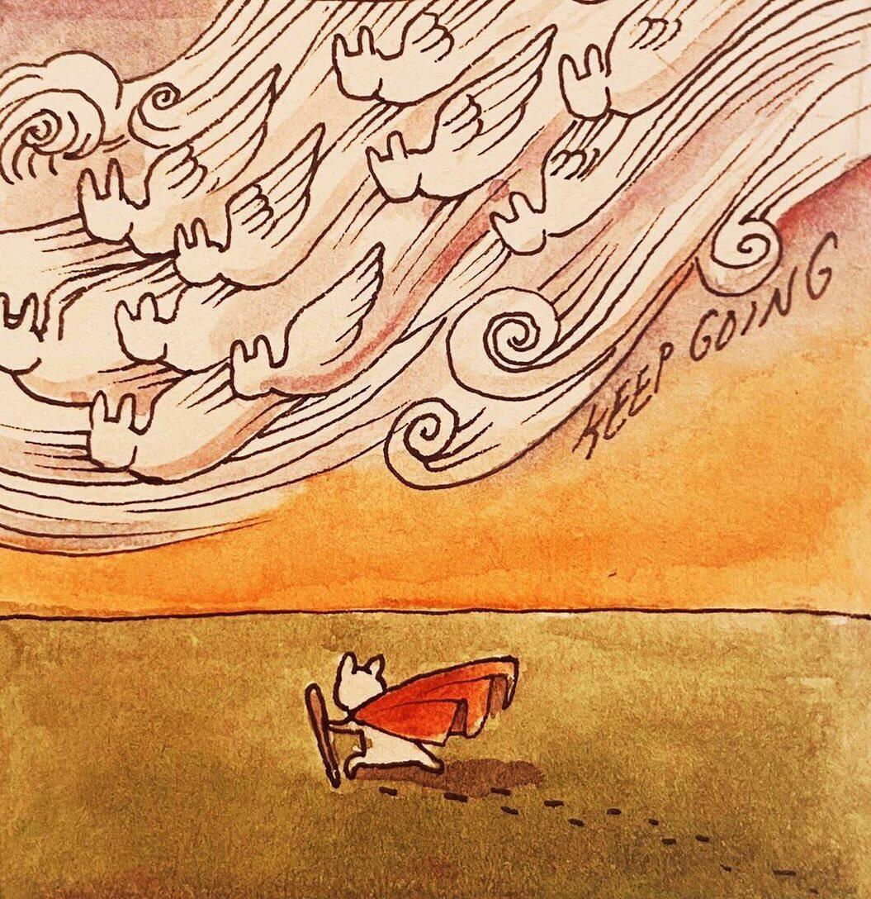
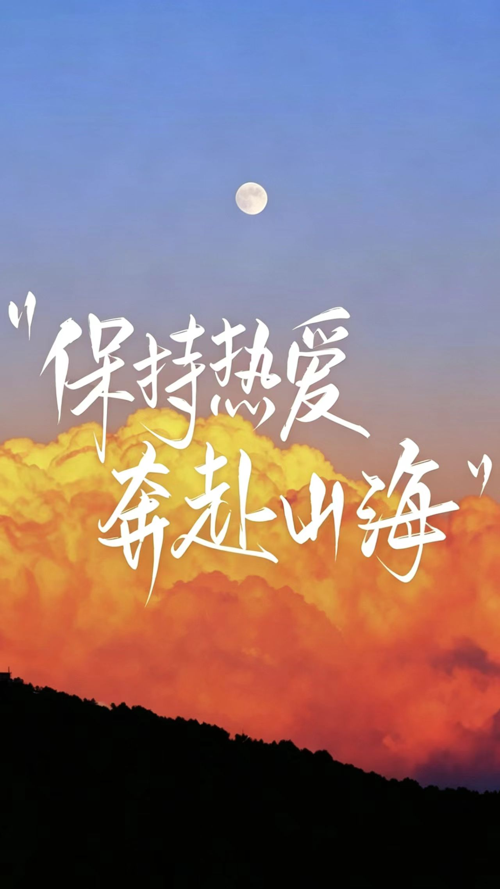

到底什么才是真正的厉害？
学会转变认知评价，是成长的关键一步。当我们跳出固有眼光，才能重新看见自己骨子里的厉害。
生活里每每遇到不顺，碰壁受挫时，我们很容易感慨：总算见识到社会的厉害了。
我们眼里社会的厉害，是现实的压力，会让人碰壁，疲惫，让人觉得无奈又无力。这份对“社会的厉害”的恐惧与敬畏，很容易让我们开始抱怨环境，否定自己慢慢陷入消极与内耗之中。
很多人因此忽略了，在面对“社会的厉害”的同时，我们更应当看见自己的厉害。
厉害是在喧嚣纷扰中稳住心态，不乱方寸；是和自己缺憾和解，接纳不足，不去内耗；是面对挫折打击时，扛住压力，不被打倒。
作为大学生，我们要主动改变认知评价，换个角度看厉害。学会把挫折当作看清自我的明镜，接纳不完美的处境，认可不放弃的自己。
当觉得社会很厉害时，要记住，在社会中努力奋斗的我们同样很厉害。
根据心理学与科学原理，从看清情绪、转变认知、身心同调三方面，稳住内心状态。
书籍《情商》与《重塑杏仁核》中提到：“直白说清自己的情绪，能唤醒大脑理性思考，平复情绪冲动，减少胡思乱想，从情绪漩涡里抽离出来。”
像旁观者一样分清“委屈不是愤怒、焦虑不等于事实”，能激活大脑理性区域，降低杏仁核活跃度，就不容易被负面情绪影响。
也就是去作为情绪的主人去观察，理解情绪。了解明晰内心所想，就不易情绪失控。
很多难过的不是事情本身，而是消极的想法。心理学家埃利斯《理性情绪》的ABC理论指出，决定心情的不是事件，是看待事情的角度。
遇事别只想着“我搞砸了”，要转变心态，往积极的方向思考，如“这件事让我们积累了经验，下次不会再去踩坑。”“我扛住了这份压力，我真的很厉害”放下消极的想法，内耗自然就减少了。
心理与生理会双向影响，科学证实：情绪紧绷会引发交感神经兴奋、心率加快、肩颈僵硬，而身体的紧绷又会反过来影响心理状态，使人容易焦虑烦躁，陷入内耗。
因此通过养生而养心就显得尤为重要。以身体的松弛带动内心平静，刻意放缓呼吸，坚持锻炼身体，保持健康的作息，远离熬夜透支。通过健康的生活习惯，使气机调畅，杂念随之减少，从根源切断内耗。
以清醒看懂情绪，以认知解开内耗，以养生治疗内心，学会调整心态，方可从容面对挑战。
什么应对方式不可取？
面对内心内耗与生活困境，躺平、抱怨、硬刚等应对方式都存在明显的弊端。
网络广为流传的躺平理念，实质上是腐蚀人意志的毒药。心里觉得疲惫、迷茫，就干脆放任自己停下脚步。长期躺平，只会让人慢慢丧失行动力，心态越来越消极，习惯退缩懈怠，最后被困在原地，失去进取之心。
习惯抱怨，只是在传播负能量。在言语中不断强调放大负面感受的同时，把责任推给环境和他人，很容易传播负面的思想。可抱怨只能暂时的发泄情绪，无法改变现实。动动嘴皮，也只不过是在原地踏步。
遇事硬刚是指不计后果，不留余地，持续内耗的应对方式。一味的硬刚，是最易损伤身心的处事方式。身心长期处于消耗状态而又从不主动调节，休整。精力一点点的损耗，终有一日会消耗殆尽。这绝对不是所谓坚持不懈，毅力惊人，而是一种得不偿失盲目的逞强。
躺平易消沉避事，抱怨难以改变现状，硬刚徒耗身心元气，皆是消极选择。
